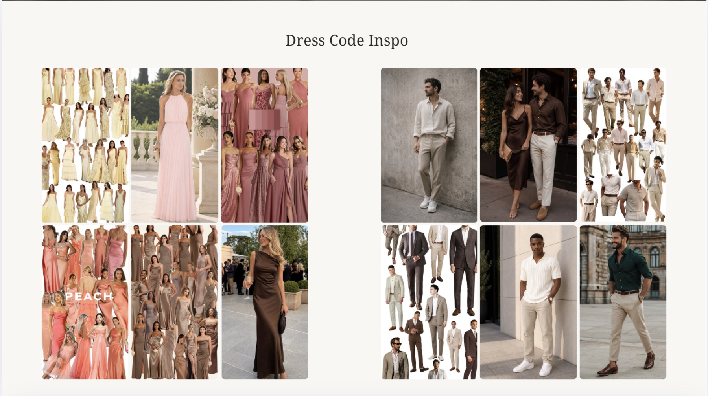

Dress Inspo
Dress code: Semi-formal to formal

Colours to avoid
Please avoid these four colours for your outfit.
- Light blue
- Sage green
- White
- Black
Dress code: Semi-formal to formal

Please avoid these four colours for your outfit.